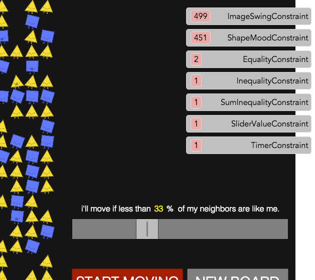
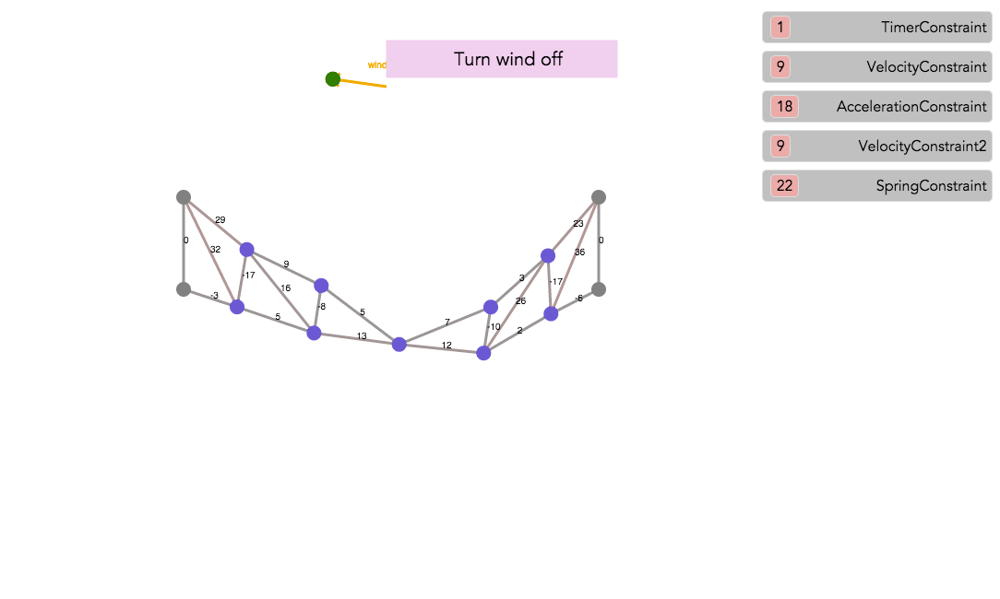

In this section we'll compare the imperative programming (IP) and constraint reactive programming (CRP) models by reflecting on the implementation in both models of a few programs, including the "Parable of the Polygons" discussed in the previous part. Let's start with positives!
-
In IP behavior can be buried in piles of code; not in CRP.
IP doesn't enforce any particular restraint on programmer's thought process or program organization. He is free to write any code as long as it captures the desired behaviors. Yet the resulting code, although functional, is often cryptic and mixes behaviors in a way that's hard to parse and organize to human mind. Moreover, there is no easy way to explore and understand the program by shallow inspection due to lack of any per-behavior organization.
Take the slider in the Parables of the Polygons page, which is used to set the bias level of a shape. Where is the piece of code that's responsible for making such functionality?
After digging into this, we see that the part of the page that includes the slider actually is embedded as an iframe, which loads the html file "play/automatic/automatic2.html." There we can see that there is an event listener setting the associated global variable representing bias to the value of the slider:
onChange:function(values){ window.BIAS = values[0]; // ... bias_text.innerHTML = Math.round(window.BIAS*100)+"%"; }Now we have identified the code responsible for this behavior. But there was no indication anywhere. After all, these are just lines of code like many other thousands of lines of code in this application.
The CRP model, however, would have forced the programmer to express this behavior as a constraint type. The slider behavior will indeed clearly show up in the list of constraints as an enabled behavior in the scene. In fact, as we have seen Sketchpad14 allows to turn constraints on and off to explore the behaviors acting on the program. Here we clearly see the
SliderValueConstraint in the list, can hover over the instance to see the objects it's applied to, and can temporarily disable the constraint to verify the behavior: Exploring the slider behavior
Also note that, despite being an elaborate demo, the set of behavior types are relatively short (7-8) as we see in the graphic above. This can be contrasted to many hundreds and thousands of "lines of code" which make an imperative program.
-
CRP induces a "linear" thinking process in designing, implementing, and exploring programs; IP results in "ad hoc" way of doing those.
CRP model forces the programmer to think and design the program as a set of individual behaviors. Once the set of behaviors are defined (as constraint types), building a program is simply a matter applying a selection of them to the data. Again, the list of behaviors is clearly acknowledged and alternation of behaviors can be done by selecting and mixing and matching.
By contrast, in IP the process is quite ad hoc. The programmer keeps a mental list of things that needs to be done for the program. She then proceeds to write the "code" that implements those things. In the lack of any organization or guidelines, this code often makes no attempt to keep the behaviors separable and modularized. It may try to use the same "loop" construct to achieve goals A and B at the same time, etc. The lack of direction and organization can also confuse the thinking process itself, leading to bugs. Although the final outcome succeeds in achieving all desired behaviors, it too often fails to be amenable to extensions or facilitating understanding. In CRP, extension and modifying is a matter of reshuffling set of constraints, whereas in IP often algorithms need to be reworked.
-
CRP model reduces the possibility of bugs.
In the CRP model, all constraints act on the same state in parallel, assuming each one is the only one trying to make a change. There is a separate later process that consolidates those changes into one final result. In IP, however, the same code is used to implement multiple behaviors. Therefore, each snippet of code that aims to achieve a particular behavior sees a different state, as our programs run sequentially. This complicates human reasoning and increases the chance of introducing bugs.
-
CRP frees the programmer from having to reason globally and computing or describing "emerging behaviors."
Have a look at the truss bridge demo shown below, an original Sketchpad and ThingLab demo and remade here using Sketchpad14. As you can see the resulting "emergent behavior" of the program is quite elaborate! There is not an easy way to "code" the behavior of this bridge under the forces of gravity and wind imperatively. On the other hand, as you can see on the constraint listing on the right pane, the constraint types that make up this overall behavior are not complicated at all. We only had to define velocity and acceleration behaviors as well as the spring force (Hook's law). Thus the programmer only has to reason "locally" and in "isolation" about each constraint. Next, we simply had to instantiate these constraints for all the bodies and beams (springs) that make up the bridge. It is the job of the system to capture the "global" behavior by combining the results of individual local constraints.
 Emergent behavior
-
CRP enables "modular" behaviors; not IP
Have a look at the video demo below. Within the parables demo we have loaded another demo, called mid point, where a red dot always is maintained at the middle between two blue dots. You'll see that we merge their behavior into three of the shapes from the parables example. And viola! The shapes retain their previous behavior (swinging, etc.) yet also take on the new behavior of the mid point example.

Modular behaviors
Doing this in IP is by no means easy. Where do we add this new behavior? How do we make sure the previous behaviors still work?